Dispensa
Ogni prodotto alimentare che Peck vende online, una volta sola anche se sta in più box. Per ognuno: chi lo fa e dove, e quanto siamo sicuri.
- Cioccolato
Tavoletta di Natale al Cioccolato al Latte 130 g
nessuna indicazione - Vini e spumanti
Canelli DOCG Moscato 2025 Peck
non trovata - Tè e caffè
Caffè Monorigine Brasile Santos Sacchetto 250 g (Grani)
certa - Cioccolato
Tavoletta di Cioccolato Fondente, Lampone e Zenzero 50 g
nessuna indicazione  Conserve e sottoli
Conserve e sottoliConfettura Extra di Lamponi 340 g
Prezzo Peck: 6,50 € (340 g)certa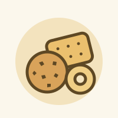
Dolci e lievitatiAmaretti alle Mandorle
certa- Cioccolato
Rondelle di Arancia Navel Candite Ricoperte di Cioccolato 70% gr 160
certa 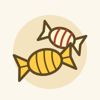
Dolci e lievitatiCaramelle gelèe al bitter140g
certa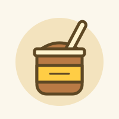
Dolci e lievitatiTris di Zabaione 120 g
certa Cioccolato
CioccolatoPraline Assortite 90 g
Prezzo Peck: 22 € (90 g)nessuna indicazione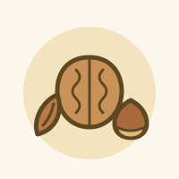
Frutta seccaNoci Pecan Pralinate 250 g
certa- Dolci e lievitati
Crema al Pistacchio g. 190
probabile  Frutta secca
Frutta seccaNocciole Tostate e Miele d'Acacia 230 g
Prezzo Peck: 11 € (230 g)certa- Cioccolato
Moneta di Cioccolato Peck Gr.50
certa  Dolci e lievitati
Dolci e lievitatiPanettone Pere e Cioccolato 800 gr
certa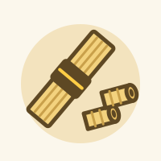
Pasta e risoSpaghetti 500 g
certa Conserve e sottoli
Conserve e sottoliPassata di Datterino Quorum 550g
Prezzo Peck: 8 € (550 g)certa- Vini e spumanti
Franciacorta Alma Assemblage 3 Extra Brut Coffret Bellavista
certa - Vini e spumanti
Franciacorta Teatro alla Scala Brut 2022 Coffret Bellavista
certa  Formaggi
FormaggiParmigiano Reggiano DOP Stagionato Minimo 24 Mesi 1 kg
Prezzo Peck: 36 € al kgprobabile Salumi
SalumiSalame di Felino IGP Peck 800 g
Prezzo Peck: 43 € al kgcerta Frutta secca
Frutta seccaMandorle Salate 200 g
Prezzo Peck: 58 € al kgPeck stessa- Conserve e sottoli
Broccoli di Rapa Varietà Spiert in Olio Extravergine di Oliva 200g
certa - Vini e spumanti
Franciacorta Riserva Palazzo Lana Extreme 2014 Berlucchi Coffret
certa - Formaggi
Parmigiano Reggiano DOP Stagionato Minimo 24 Mesi 500g
Prezzo Peck: 36 € al kgcerta 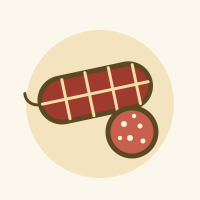
SalumiMortadella Mini 0.7 kg
certa- Vini e spumanti
Brunello di Montalcino Poggio alle Mura 2021 Banfi
certa  Conserve e sottoli
Conserve e sottoliRagù al Cinghiale 180 g
Prezzo Peck: 8 € (180 g)certa- Pasta e riso
Tagliatelle all'Uovo 500 g
certa  Formaggi
FormaggiPecorino al Tartufo Stagionato in Grotta 1 kg
Prezzo Peck: 52 € al kgnessuna indicazione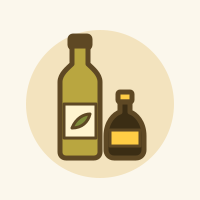
Olio e acetoOlio Extravergine di Oliva "I Tattoli" Chianti Classico DOP 500 ml
certa- Salumi
Cotechino all'Antica kg. 1
certa  Altro
AltroLenticchie di Castelluccio di Norcia IGP 500 g
Prezzo Peck: 12 € (500 g)certa- Vini e spumanti
Champagne Krug Grande Cuvee 174 Ed Coffret
certa  Dolci e lievitati
Dolci e lievitatiPanettone Tradizionale 1 kg
certa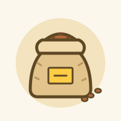
Pasta e risoRiso Carnaroli 1 kg
certa- Dolci e lievitati
Caramelle Gelèe al mandarino tardivo di Ciaculli 140g
certa  Olio e aceto
Olio e acetoAceto Balsamico di Modena IGP * 100 ml (Fuxia)
Prezzo Peck: 8 € (250 ml)non trovata- Vini e spumanti
Chianti Rufina Nipozzano Vecchie Viti 2022 Frescobaldi
certa  Olio e aceto
Olio e acetoOlio Extra Vergine di Oliva Monte sul Lago
Prezzo Peck: 19 € (500 ml)probabile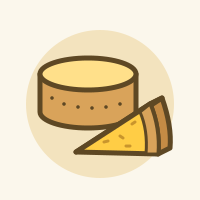
FormaggiParmigiano Reggiano DOP Vacca Bianca
certa- Olio e aceto
Olio Extravergine di Oliva Grand Cuvée Ugo Caldera 1,5 l
nessuna indicazione - Formaggi
Tometta di Capra a Crosta Naturale 0.6 kg
certa - Salumi
Mortadella Mini al Tartufo 0.7 kg
certa - Dolci e lievitati
Caramelle gelèe allo zafferano 140g
certa - Pasta e riso
Fusilloni 500 g
certa  Formaggi
FormaggiPecorino Sardo Maturo DOP Medoro 650 g
Prezzo Peck: 49 € al kgcerta Conserve e sottoli
Conserve e sottoliCapperini di Salina al Sale 140 g
Prezzo Peck: 10 € (140 g)certa Conserve e sottoli
Conserve e sottoliCucunci di Salina in Aceto di Vino 200 g
Prezzo Peck: 12,50 € (200 g)certa- Conserve e sottoli
Taralli al Pomodoro Secco gr. 200
certa - Salumi
Coppa Peck Trancio 800g
certa  Pesce
PescePeperoncini Farciti con Capperi e Acciughe 200 g
Prezzo Peck: 20 € (200 g)certa Olio e aceto
Olio e acetoCondimento Aromatizzato al Tartufo Bianco 25 cl
Prezzo Peck: 24 € (250 ml)non trovata Conserve e sottoli
Conserve e sottoliSalsa di Funghi Porcini 180 g
Prezzo Peck: 16 € (180 g)certa- Pasta e riso
Penne 500g
certa 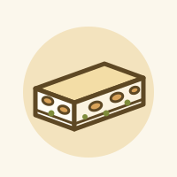
Dolci e lievitatiTorrone Friabile con Mandorle 250 g
certa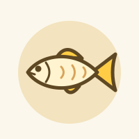
PesceCuore di Filetto di Salmone 170 gr
certa- Vini e spumanti
140° Peck Metodo Classico Pas Dosè 2019 Peck
certa  Conserve e sottoli
Conserve e sottoliCarciofini Grigliati in Olio Extra Vergine di Oliva 340 g
Prezzo Peck: 30 € (340 g)non trovata- Pasta e riso
Bucatini 500 g
certa  Conserve e sottoli
Conserve e sottoliRagù al Cervo 180 g
Prezzo Peck: 8 € (180 g)certa Frutta secca
Frutta seccaAnacardi Salati al Curry 200 g
Prezzo Peck: 50 € al kgPeck stessa- Conserve e sottoli
Genovese Napoletana 300 g
certa  Conserve e sottoli
Conserve e sottoliPomodori Secchi in Olio Extravergine di Oliva 190 g
Prezzo Peck: 12,50 € (190 g)certa Conserve e sottoli
Conserve e sottoliGiardiniera Peck 580 ml
Prezzo Peck: 22 € (580 ml)certa- Vini e spumanti
Castello Pomino Chardonnay Riserva Benefizio 2024 Frescobaldi
nessuna indicazione - Pasta e riso
Paccheri 500 g
certa 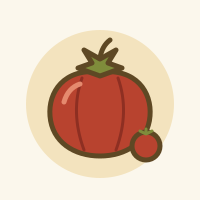
Conserve e sottoliAcquasale di "Pomodoro Vernino" in Olio Extravergine di Oliva 500 g
certa Salumi
SalumiSalametto Peck 350 g
Prezzo Peck: 40 € al kgcerta- Dolci e lievitati
Baci di Dama 150 g
probabile - Cioccolato
Tartufini Neri di Cioccolato 50 g
certa - Formaggi
Pecorino Stagionato Sotto Cenere 350 gr
nessuna indicazione - Dolci e lievitati
Crema alla Mandorla g. 190
probabile 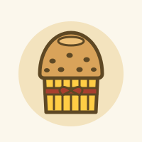
Dolci e lievitatiPanettone Tradizionale 220 gr
certa- Conserve e sottoli
Olive Verdi "Bella di Cerignola GGG 290 g
non trovata - Altro
Zuppa di Legumi 500 g
certa - Altro
Granola di Legumi 200 gr.
certa - Conserve e sottoli
Caponata di Melanzane 200 gr
certa  Conserve e sottoli
Conserve e sottoliFunghi Porcini Secchi Extra 50 g
Prezzo Peck: 23 € (50 g)certa- Vini e spumanti
Franciacorta Berlucchi '61 Nature Berlucchi
certa - Cioccolato
Tavoletta di Cioccolato al Latte con Datteri e Arancia
nessuna indicazione  Conserve e sottoli
Conserve e sottoliConfettura Extra di Fichi 340 g
Prezzo Peck: 6,50 € (340 g)certa Dolci e lievitati
Dolci e lievitatiPanettone Cioccolato e Albicocche 800 gr
certa- Altro
Zafferano di Sardegna Bio in Stimmi 0.25 g
certa - Vini e spumanti
Champagne Dom Perignon Brut 2018 Coffret Moet Hennessy
certa - Vini e spumanti
Champagne Dom Ruinart Brut 2013 Ruinart
certa  Dolci e lievitati
Dolci e lievitatiVeneziana 800 gr
certa- Dolci e lievitati
Zabaione Classico 200 gr
nessuna indicazione - Vini e spumanti
Prosecco Valdobbiadene 2025 Peck
non trovata 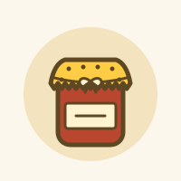
Conserve e sottoliMarmellata di Mandarini 340g
certa Conserve e sottoli
Conserve e sottoliMarmellata di Limoni e Cedri 340 g
Prezzo Peck: 6,50 € (340 g)certa- Dolci e lievitati
Biscotti Cannella, Cioccolato e Arancio 110g
certa - Dolci e lievitati
Biscottii Cioccolato e Sale 110 g
certa - Tè e caffè
Te Nero Pleasure Forest (Aromatizzato al Pistacchio) 100 g
certa - Dolci e lievitati
Biscotti al Caramello Salato 110g
certa - Cioccolato
Gianduiotti 300 g
certa - Tè e caffè
Caffè 100% Arabica Sacchetto 250 g (Grani)
certa - Tè e caffè
Caffè Milano Sacchetto 250 g (Grani)
certa - Cioccolato
Tavoletta di Cioccolato al Latte con Nocciole
Peck stessa - Frutta secca
Nocciole Pralinate 250 g
certa  Salumi
SalumiSalametti Mignon Peck 550 g
Prezzo Peck: 22 € (550 g)certa- Conserve e sottoli
Cipolline in Aceto di Vino 200 g
certa - Pesce
Filetti di Ventresca di Tonno all'Olio di Oliva Peck 200 g
certa  Frutta secca
Frutta seccaPistacchi Tostati e Salati 200 g
Prezzo Peck: 38 € al kgPeck stessa- Frutta secca
Noci Pecan Tostate e Salate 200 g
Prezzo Peck: 60 € al kgcerta - Dolci e lievitati
Krumiri 200 g
probabile - Olio e aceto
Olio Extravergine di Oliva Maccia d'Agliastru
certa  Dolci e lievitati
Dolci e lievitatiPandoro 1 kg
certa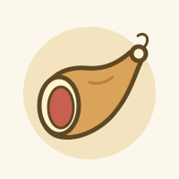
SalumiProsciutto Crudo Stagionato Trancio gr 800
certa Olio e aceto
Olio e acetoOlio Extravergine di Oliva Taggiasca
Prezzo Peck: 27 € (500 ml)certa Olio e aceto
Olio e acetoOlio Extra Vergine di Oliva Nocellara 50 cl
Prezzo Peck: 25 € (500 ml)non trovata- Cioccolato
Tavoletta di Natale Cioccolato Fondente 130 g
nessuna indicazione  Olio e aceto
Olio e acetoAceto Balsamico di Modena IGP ** 250 ml
Prezzo Peck: 12 € (250 ml)non trovata Frutta secca
Frutta seccaFrutta Disidratata in Latta gr 320
nessuna indicazione- Vini e spumanti
Franciacorta Cuvée Prestige Edizione Peck ca' del Bosco
certa  Formaggi
FormaggiBagoss di Bagolino 0.5 kg
Prezzo Peck: 96 € al kgcerta Formaggi
FormaggiCastelmagno DOP 500 gr
Prezzo Peck: 50 € al kgnessuna indicazione Conserve e sottoli
Conserve e sottoliMostarda di Frutta Candita 500 g
Prezzo Peck: 15 € (500 g)certa Frutta secca
Frutta seccaNoci e Miele di Acacia 230 g
Prezzo Peck: 10,50 € (230 g)certa Salumi
SalumiJamón Ibérico Gran Riserva Joselito Affettato 70 g
Prezzo Peck: 36 € (70 g)certa Salumi
SalumiPaleta Ibérica Gran Riserva Joselito Affettata 70 g
Prezzo Peck: 26 € (70 g)certa- Formaggi
Parmigiano Reggiano DOP Stagionato Minimo 24 Mesi 2 kg
Prezzo Peck: 36 € al kgprobabile - Conserve e sottoli
Fico Tartufato 100 g
certa - Conserve e sottoli
Amarena Tartufata gr. 80
certa - Dolci e lievitati
Torrone Morbido con Mandorle, Pistacchi e Canditi 250 g
certa - Altro
Taralli Tradizionali gr. 230
certa - Salumi
Trancio di Bresaola di Magatello 800 g
nessuna indicazione - Formaggi
Monnalisa allo Zafferano 0,5 kg
certa - Vini e spumanti
Guidalberto 2024 Incisa Rocchetta
certa - Cioccolato
Marroncini Canditi Ricoperti di Cioccolato 70% gr 110
certa  Cioccolato
CioccolatoPraline Assortite 430 g
Prezzo Peck: 68 € (430 g)nessuna indicazione- Conserve e sottoli
Marroni al Naturale 400 g
certa - Tè e caffè
Tè White Monkey Sacchetto 100 g
certa - Conserve e sottoli
Filetti di Arancia Tartufati 80 g
nessuna indicazione - Salumi
Zampone kg 1,3
certa - Dolci e lievitati
Gelatine Panettone al Rum 140 g
certa - Pesce
Granchio Reale Rosso al Naturale 400 g.
certa - Pesce
Filetti di Acciughe del Mar Cantabrico Peck 78 g
Prezzo Peck: 22 € (78 g)certa 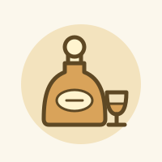
DistillatiGin Peck 43% 50 cl
probabile Pesce
PesceBottarga di Muggine Grattugiata 100 g
Prezzo Peck: 29 € (100 g)certa- Dolci e lievitati
Torrone Friabile Ricoperto di Cioccolato Fondente 250 g
certa - Vini e spumanti
Barolo Cinquevigne 2022 Damilano
certa - Dolci e lievitati
Zabaione al Moscato d'Asti 200 gr
certa  Formaggi
FormaggiPecorino ai Quattro Pepi 400 gr
Prezzo Peck: 43 € al kgcerta- Cioccolato
Salametto al Cioccolato Peck 200 g
nessuna indicazione - Dolci e lievitati
Crema alla Nocciola 200 g
certa - Dolci e lievitati
Marrons glacés - 6 PEZZI
certa - Distillati
Amaro Quintessentia Nonino 70 cl
certa - Distillati
Grappa Antica Cuvée Barricata Nonino 70 cl
certa  Cioccolato
CioccolatoPraline Assortite 190 g
Prezzo Peck: 36 € (190 g)nessuna indicazione- Dolci e lievitati
Torroncini Assortiti in Latta gr 300
certa - Olio e aceto
Olio Extravergine di Oliva l'Unico 500 ml (Piemonte)
probabile  Dolci e lievitati
Dolci e lievitatiPanettone 10 kg
certa Dolci e lievitati
Dolci e lievitatiPanettone 2 kg
certa Dolci e lievitati
Dolci e lievitatiPanettone 3 kg
certa- Olio e aceto
Aceto Balsamico di Modena IGP * 25 cl
Prezzo Peck: 8 € (250 ml)non trovata - Olio e aceto
Olio Extravergine di Oliva Chianti Classico DOP 25 cl
certa  Conserve e sottoli
Conserve e sottoliSalsa di Noci 180 g
Prezzo Peck: 9,50 € (180 g)certa Conserve e sottoli
Conserve e sottoliMiele di Limone 250 g
Prezzo Peck: 9 € (250 g)certa- Cioccolato
Tavoletta di Cioccolato Bianco con Pistacchi 55 g
nessuna indicazione - Tè e caffè
Tè Peck Lovely Christmas 100 g
certa - Olio e aceto
Olio Extra Vergine di Oliva Chianti Classico DOP 500 ml
non trovata  Conserve e sottoli
Conserve e sottoliPomodorini Rossi al Naturale "Quorum" 350g
Prezzo Peck: 8 € (350 g)certa- Pasta e riso
Rigatoni 500 g
certa - Conserve e sottoli
Confettura Extra di More 340g
certa  Conserve e sottoli
Conserve e sottoliOlive Taggiasca Snocciolate in Olio EVO 180 g
Prezzo Peck: 12 € (180 g)non trovata- Altro
Taralli ai Semi di Finocchio Gr.230
certa  Pesce
PesceSalmone Affumicato Allevato Orcadi Asse e Coltello
certa- Vini e spumanti
Avenir Spumante San Patrignano
certa  Conserve e sottoli
Conserve e sottoliSalse Piccanti di Frutta: Castagna, Susina e Pera 144 g
Prezzo Peck: 10 € (144 g)certa- Cioccolato
Crema Cioccolato e Arancia 200 g
certa  Altro
AltroPeperone Crusco 20 g
Prezzo Peck: 8,50 € (20 g)non trovata- Pasta e riso
Penne senza Glutine 500 g
certa - Conserve e sottoli
Pomodorini Arancioni al Naturale "Blondy" 350g
certa - Pesce
Filetti di Tonno all'Olio di Oliva 200 g
certa - Pasta e riso
Spaghetti senza Glutine 500 g
certa - Vini e spumanti
Lucente 2024 Frescobaldi
certa  Conserve e sottoli
Conserve e sottoliPesto alla Genovese 180 g
Prezzo Peck: 11 € (180 g)certa- Conserve e sottoli
Carciofini Mignon in Olio Extra Vergine di Oliva 190 g
probabile  Conserve e sottoli
Conserve e sottoliFunghi Porcini in Olio Extra Vergine di Oliva 190 g
Prezzo Peck: 40 € (190 g)certa- Olio e aceto
Olio Extravergine di Oliva Lorenzo 5 500ml
certa - Pasta e riso
Linguine 500 g
certa - Dolci e lievitati
Zabaione Marsala Ambra 2004 200 gr
certa - Pesce
Salmone Affumicato Allevato 200 gr
non trovata  Conserve e sottoli
Conserve e sottoliRadicchio Rosso Tardivo sott'Olio 330 g
Prezzo Peck: 27 € (330 g)non trovata Formaggi
FormaggiMontasio DOP Stagionato 1 kg
Prezzo Peck: 36 € al kgcerta- Vini e spumanti
Lunelli Riserva 2016 Ferrari
certa  Conserve e sottoli
Conserve e sottoliCrema di Puro Tartufo Bianco 40 g
Prezzo Peck: 99 € (40 g)certa- Pasta e riso
Tagliatelle all'Uovo con Tartufo Stese a Mano 250 g
certa - Vini e spumanti
Giulio Ferrari Trento Brut Riserva 2015 Ferrari
certa  Altro
AltroBurro con Tartufo 30 g
Prezzo Peck: 12,50 € (30 g)certa Conserve e sottoli
Conserve e sottoliCrema al Parmigiano Reggiano e Tartufo 180 g
Prezzo Peck: 21 € (180 g)certa- Pasta e riso
Tagliolini all'Uovo 500 g
certa - Dolci e lievitati
Panforte 250 g
certa
Nessun risultato. Prova a togliere qualche filtro.